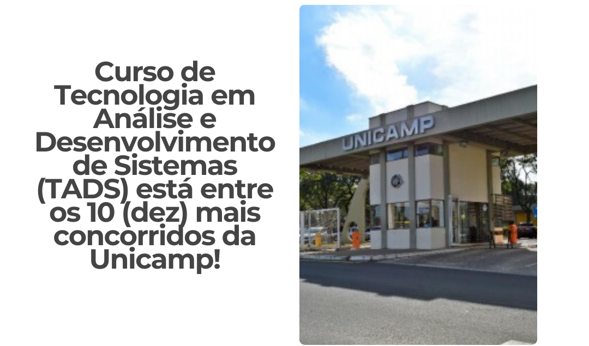
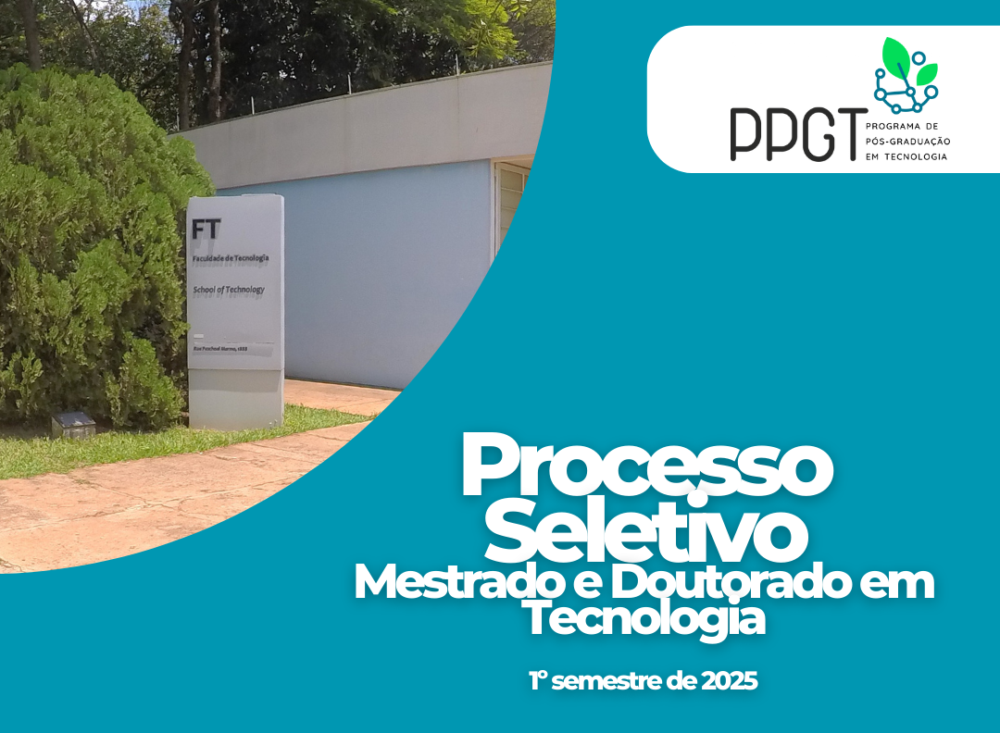

TADS entre os 10 cursos mais procurados da Unicamp

No Vestibular 2025 da Unicamp, o curso de Tecnologia em Análise e Desenvolvimento de Sistemas (TADS) está entre os 10 mais procurados, com uma concorrência de 22 candidatos por vaga. A área de Computação foi destaque, com três cursos entre os mais disputados: Ciência da Computação, Engenharia da Computação e TADS.
FT na UPA 2024 - Unicamp de Portas Abertas

A Faculdade de Tecnologia teve destaque na 19ª edição do evento Unicamp de Portas Abertas (UPA) de 2024. Os cursos de Engenharia de Telecomunicações, TADS, e Sistemas de Informação atraíram muitos visitantes, com atividades interativas, robôs e palestras. Foi uma grande oportunidade para futuros vestibulandos conhecerem mais sobre as áreas de atuação da FT.
Edital do Processo Seletivo - Pós-graduação em Tecnologia - 1º semestre de 2025

Estão abertas as inscrições para o Processo Seletivo de Mestrado e Doutorado da Faculdade de Tecnologia da Unicamp, com ingresso para o 1º semestre de 2025. As inscrições vão de 14/10/2024 a 03/11/2024, e devem ser realizadas em duas etapas: inscrição no SIGA e submissão de documentos no SGPG. Concluintes de graduação e mestrado podem participar com as devidas documentações.